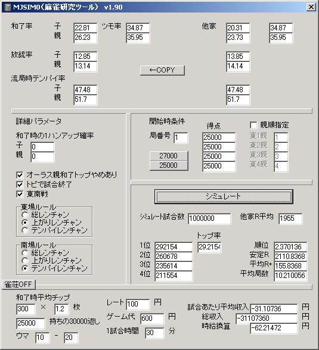

とつげき東北
概要
あるルール内で、他家平均に対して和了率・放銃率等が高いまたは低いプレイヤーがいる。
和了した場合や放銃した場合の得点分布が一定として、このプレイヤーはどのような順位分布を取ることが期待できるか？
オーラスの逆転確率はどれくらいか？ ラス親の有利さはどうか？
東風戦と東南戦の違いによって、放銃率に対する和了率の重要さはどのように違うか？
こうした様々の問題に解答するために、MJSIM0は動作する。
実行画面例

v1.00 公開版。エラーチェック等なし。
v1.10 微調整。
v1.20 東南戦対応版（テンパイレンチャン機能はつけてません）。
v1.30 本場の計算を導入。
v1.40 上がりレンチャンがバグってたので直した(笑)。それに伴って第二のデータを取り直した。
v1.80 各種開始時条件の追加、終了条件等の追加。
v1.90 雀荘モード追加。
v2.00 UIの改善（ダウンロードアクセス4/17 0:00開始）。
掲示板 面白いシミュレーション結果が出たら報告してください。
【ソースコードについて・プログラマ向け】
麻雀の研究のためにソースコードが必要な方はご相談ください（プログラムの勉強のためにはならないと思います 笑）。
このソフトは、Borland C++ Builder Professional 5.0で作成されました。このコンパイラを持っている人はコンパイルできます。
ほとんどCのみで書かれています。個人的なものなので説明などはほとんどありません。
全体的に構造化されておらず(笑)、グローバル変数などもバキバキ使ってますが文句言う人はご自分で作ってください。
改変したものは、基本的にソースコードの使用権をとつげき東北に譲渡することで、公開することが可能です。
ただし、このページを介することなくMJSIM0のソースコードを他人に公開してはいけません（高速化テクニックなど、有益な情報提供のための一部のコードの開示を除く）。
パラメータの割り振りと挙動
（基本的な説明）
左上の「和了率」「放銃率」などはすべて％で記入する。
右上は、他家平均の値である。
詳細パラメータとして、以下のような変更を行うことができる。
・和了時に1ハンアップさせる確率の指定（和了点数が大きい人向け、ちなみに10％でおよそ250前後の平均和了点の増加が見込めると思われる）
・各種ルールの設定
開始時条件として、開始局と持ち点、席順を設定できる。
開始局は東1=1 東2=2 ・・・ 南4=8 である。
席順指定においては、「東1親」のところに、チーチャである人のプレイヤー番号を、以下同様に入れる。なおプレイヤー1が「自分」である。
以上をセットし、試合数と他家平均Rを指定してシミュレートを行う。
順位分布、トップ率・・・等の結果が得られる。
また雀荘ONにすると、各種レートにおける「金銭的収入」を非常に細かく計測できる。
（具体的な使用法）
例えば、起動後、適当に和了率や放銃率を変化させて、シミュレートしてみるとよい。
しばらくして、平均順位や順位分布が表示されるはずだ。
東南戦にしてみたり、いくつかいじって試してみてほしい。
少し慣れてきたら、研究目標をうまく立てながら集計してみることを考えよう。
「総レンチャンで和了やめありの時、ラス親はどの程度有利だろうか？」
他家と同じ和了率・放銃率・・・に設定し、単にルールのパラメータを変えて集計してみるだけでいい。
他家と同じ「強さ」のはずなのに平均順位が良くなるのは、なにより「和了やめありのラス親の有利さ」によるものであるとわかり、その度合いがルールに応じて定量的に把握できる。
他にも、点数状況の研究をしてみるとよい。
例えば、自分50000点、2位50000点（タイ）、3位4位5000点とし（このように、点数の合計は別に何点であっても良い）、開始局を4（東南戦なら8）にして集計してみる。
恐らく、トップ率は50％近い値になるだろう。
では、「席順指定」をチェックし、「東4親」を1にして同様の計算をしてみよう。
今度は、同じオーラストップとは言え、おやかぶりによる順位低下の可能性が出てくるため、トップ率は40％などに低下するだろう。
このように、点数状況を場合わけすることで、今まで知られていなかった様々な情報を得ることができる。
これまでカンと予想でしかなかった様々のパラメータを、このシミュレータによって定量化・明確化することが可能である。
【実際の研究例】
東風戦荘レンチャンと、東南戦和了レンチャンとのルール差によって、「強さ」の基準は変わるか、どの程度変わるかの研究
順位麻雀とトップ麻雀（金麻雀）との「実力の差」はどのようになるかの定式化の研究
詳細情報
1局あたりの自分および他家の和了率・放銃率・流局時テンパイ率等の情報が与えられているとき、麻雀を単なる「局の集合」とだけ考えてその各種パラメータで「オーラス」まで実際に打たせる。
プレイヤーは自分の得点状況や順位の狙い方については完全に無関心である（例えば、ラス確なども平気で行うし、オーラストップでも大きな手を和了するものとする）。
この局集合ゲーム（擬似麻雀と呼ぶ）を充分な回数終えたときに、順位の分布がどのようになるかを計算するのがこのシミュレータである。
また各種雀荘ルールにおける収入なども計算できる。
簡単には、次のような計算を行う。
その局の親子の和了率に従い、誰が和了したか、または流局したかを決定する。
和了者がいる場合、ツモ率にしたがってツモかどうかを決定し、ロンの場合は放銃率比に従って放銃者を決定する。
流局の場合は流局時テンパイ率にしたがってテンパイ人数を出し、実際のゲームと同様の得点のやりとりを行う。
得点の決定
和了得点の分布には、とつげき東北の実測データを用いた。
雀友による集計によると
1はん 1037
2はん 1292
3はん 1242
4はん 664
ﾏﾝｶﾞﾝ 736
ﾊﾈﾏﾝ 244
ﾊﾞｲﾏﾝ 40
ｻﾝﾊﾞｲﾏﾝ 3
ヤクマン 6
ﾄｰﾀﾙ 5264
（上がり役）ツモ 1373
のようであった。
これをまず、ハン数に分解する。
マンガンとは4はんと5はんが半々で分布するもの、ハネマンとは6,7はんが半々で分布するもの･･･と単純化して振り分ける。
1はん 1037
2はん 1292
3はん 1242
4はん 1032
5はん 368
6はん 122
7はん 122
8はん 14
9はん 13
10はん 13
11はん 2
12はん 1
ヤクマン 6
ここで、ツモによって1役増えているものが、5264回の和了のうち26.1％ある。
このことから、2はん以上の和了で、ﾔｸﾏﾝでない和了の全ては、32.55％の確率で1ハン増えていると考える。
ツモのみなども考慮して、およそ30％が1ハン増えていると考えて簡単に修正すると
1はん 1037 =1037
2はん 1292 -388+373 =1277
3はん 1242 -373+310 =1179
4はん 1032 -310+110 =832
5はん 368 -110+37 =295
6はん 122 -37+37 =122
7はん 122 -37+4 =89
8はん 14 -4+4 =14
9はん 13 -4+4 =13
10はん 13 -4+4 =13
11はん 2 =2
12はん 1 =1
ヤクマン 6 =6
上図のようになる。
これを「ロンの場合の役数の分布」と考えることとする。
ツモ和了したとき、リーチかつツモであれば1ハン増加するとする。
なお、和了時ツモ上がり割合は36％、和了時リーチ率×リーチ時ツモ率は20.2％であるので、ツモ上がった場合は56％程度1ハンアップしていると考えられる（とつげき東北の実測）。これは他家平均では49.2％程度であり、打ち手によって若干異なる指標であるが、和了率の差などに比べてほとんど影響はないものと考えられるので、全て50％固定とした。
以上のように決定された役数にしたがって得点を決定する。1000か1300か、2000か2600か、などの符による差については、半々（ランダム）とし、1600などはないものとした。
子のロン得点を基準として親子・ツモによって得点を変化させ、実際の麻雀の得点収入・収支と同じ得点収入・収支で計算している。
なお現在20符ツモに対応していないが、今後改善する可能性が高い。
（擬似麻雀と実際の麻雀の成績比較）
以下v1.40で計測。詳細な値は今後のバージョンアップに伴って変化する可能性がある。
とつげき東北の2001年度全ての超ランデータ
3427試合 他家R1955
和了率 子 20.02 ツモ 35.29 他家 20.55 34.92
親 25.18 ツモ 36.91 23.93 36.41
放銃率 子 13.06 13.37
13.01 13.88
テンパイ 49.71 46.69
57.12 52.12
理論上の安定R1980 実測の安定R2045
とつげき東北の過去の超ランデータ一部
1181試合 他家R1956
和了率 子 21.10 ツモ 36.84 他家 20.19 35.93
親 25.23 ツモ 36.29 22.40 36.25
放銃率 子 13.32 13.13
13.36 14.28
テンパイ 53.60 51.67
60.36 55.00
理論上の安定R2025 実測の安定R2035
とつげき東北の1999〜2000年の上ランデータ
1781試合 他家R1769
和了率 子 20.64 ツモ 34.35 他家 20.50 47.09
親 24.91 ツモ 29.66 25.53 34.40
放銃率 子 13.02 14.95
13.44 14.48
テンパイ 47.03 47.09
53.18 56.23
理論上の安定R1783（東12のみで1799） 実測の安定R1899
とつげき東北のワイ卓データ一部（親子の別なし）
321試合 他家R1639
和了率 子 23.66 ツモ 35.31 他家 20.19 35.47
親 23.66 ツモ 35.31 20.19 35.47
放銃率 子 11.96 15.12
11.96 15.12
テンパイ 50.38 45.68
50.38 45.68
理論上の安定R1866 実測の安定R1876
上記データを見てもわかるとおり、このシミュレータで計測した理論上の安定Ｒは、かなり長期のデータでの安定Ｒともずれる。
安定Ｒの偶然性によるばらつきの問題もあるが、「オーラス4位ではムリにつっぱって放銃率が上がるが、オーラストップなら慎重に打つ」とか、その他様々の技術の差が現れている可能性も高い。
このシミュレーションでは反映できないような指標による差もあると思われる。
安定Ｒを予想するために用いるのではなく、重要な使用法は、例えば以下のような研究に用いることである。
・今の打ち方から、他の技術を変化させずに和了率・放銃率を1％ずつ増加させるように打ち方を変えた場合、どの程度強くなるかまたは弱くなるか
・ある和了率・放銃率の他家がいる卓において、どのような和了・放銃率が順位に対して最適であるか
・和了率・放銃率・流局テンパイ率・親和了率等のうち、どのパラメータを変更することが順位の上昇に対して有効か（どのパラメータが変更しやすいか）
・他家の和了率・放銃率の変化に対して、自分の「打ち方」をどの程度対応させる必要があるか
・ある得点分布である局を迎えることが、他の場合と比較して有利か不利かの研究（南3でトップと南4でトップのどちらが有利か、そのための差込みは有利か）
他にもあらゆる種類の研究にこのシミュレータは力を発揮する。